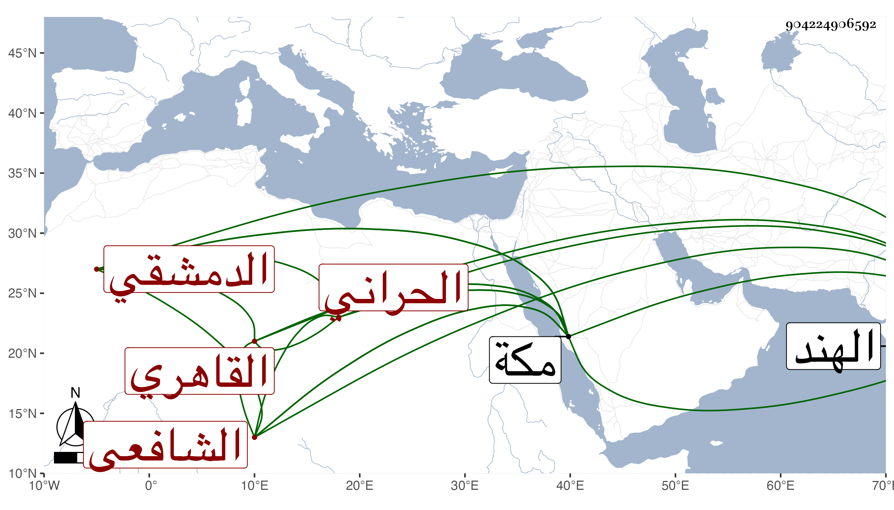

0902Sakhawi.DawLamic.ITO20230111-ara1.EIS1600.904224906592
Biography ID: 904224906592
567
محمد بن محمد بن محمد بن عبد الله بن عبد الحليم بن عبد السلام ناصر الدين بن ناصر الدين بن الشمس بن الجمال الحراني الأصل ثم الدمشقي القاهري الشافعي الماضي أبوه ويعرف كسلفه بابن تيمية . ولد سنة تسع وثمانمائة وقرأ القرآن والمنهاجين وأخذ في الفقه عن الشرف السبكي وغيره بل حضر دروس الشهاب الطنتدائي وفي النحو عن الشمس الشطنوفي . مات بمكة في ليلة الصعود سنة ست وسبعين وقد قارب السبعين ، وكان إنسانا حسنا كبير الهمة وافر المروءة قانعا وباسمه مرتب في الخاص صار إليه بعد أبيه ثم لزم خدمة ابن الهمام وحضور درسه فقرره في خدمة الشيخونية مع كونه لم يعهد فيها غير حنفي وكذا لازم الشمني واستقر به في بعض وظائف التربة القانبيهية ، وشهد ببعض المراكز بل ناب عن العلم البلقيني وفي الآخر توجه رسولا عن الخليفة المستنجد بالله لتقليد ابن سلطان الهند بعد أبيه فمات في توجهه بمكة رحمه الله وإيانا .
